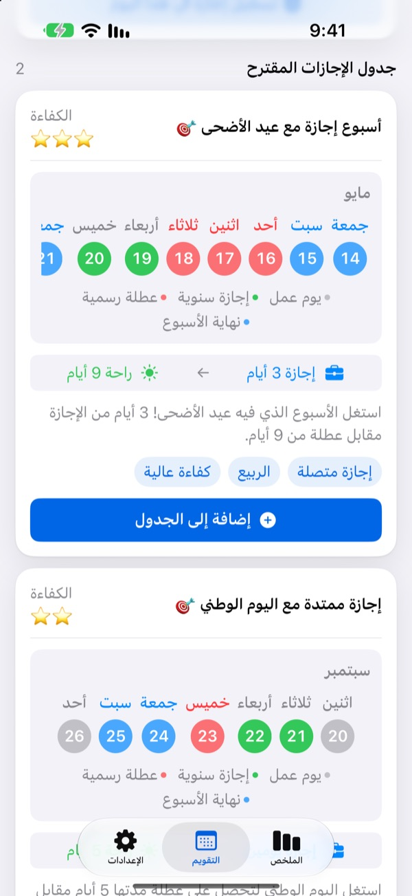
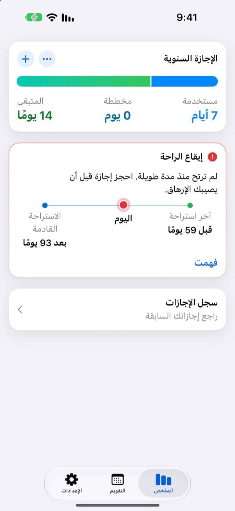
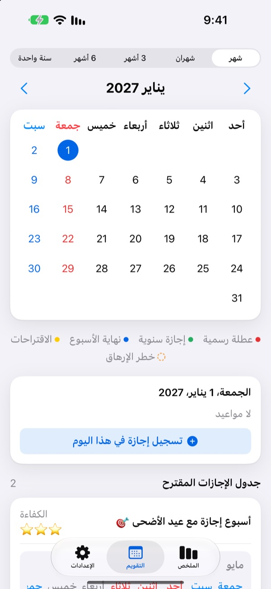
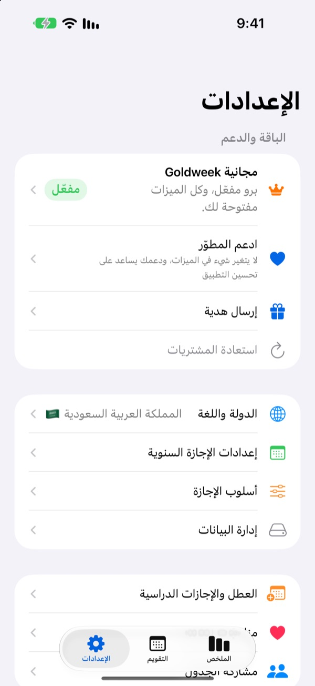

يوم إجازة واحد
وعطلة من أربعة أيام
Goldweek يجمع العطل الرسمية مع نهاية الأسبوع ويريك بالضبط أي الأيام تأخذها إجازة لتحصل على أطول عطلة. لا حاجة لتقليب التقويم وعدّ الأيام.
التحميل مجاني، وتسجيل الإجازات وعرض الاقتراحات يبقيان مجانيين.

إلى أين تصل بك أيام إجازتك؟
اختر عدد أيام الإجازة التي تستطيع أخذها، لنعرض لك أطول العطلات التي تمنحها حول العطل الرسمية القادمة.
هل تعبت من تقليب التقويم لحساب إجازتك؟
إن وافقت العطلة الرسمية يوم الأحد فهل تأخذ الخميس الذي قبلها، أم تضم أيامك إلى عطلة العيد؟ تقلّب التقويم وتعدّ الأيام ثم تأخذ إجازتك في أي وقت كان، وفي نهاية العام يضيع ما بقي من رصيدك. Goldweek يحسب ذلك عنك ويريك أولًا الأيام التي تمنحك راحة أطول بالرصيد نفسه.
رصيدك المتبقي في لمحة
إجمالي إجازتك وما استخدمته وما بقي منها في شاشة واحدة. نعرض لك ما مضى من العام بجانب ما استخدمته من إجازتك، فتعرف فورًا إن كنت تؤجل راحتك أكثر مما ينبغي.
ومن دون فتح التطبيق ترى رصيدك المتبقي وإجازتك القادمة في ويدجت الشاشة الرئيسية.

سجّل إجازتك من التقويم مباشرة
العطل الرسمية والإجازات والعطلات المقترحة تظهر بألوانها على التقويم. اضغط على أي يوم لتضيف إجازة أو تعدلها، وسجّل نصف اليوم وربع اليوم والإجازة بالساعات.
ويمكنك استيراد إجازاتك السابقة دفعة واحدة من صورة لشاشة سجل الإجازات في نظام شركتك.

بحسب بلدك ونظام عملك
في التطبيق العطل الرسمية لـ 42 دولة، منها السعودية والإمارات وقطر ومصر والمغرب، إضافة إلى دول أوروبا وآسيا والأمريكتين وأوقيانوسيا. إن كانت العطل تختلف بحسب المنطقة فاختر منطقتك، وإن لم تكن دولتك في القائمة فأضف عطلاتها بنفسك.
وتختار أيضًا أيام نهاية الأسبوع وأول أيام الأسبوع، والدوام الثابت أو الجزئي أو نظام المناوبات.

ثلاث خطوات للبدء
- 1
أخبرنا ببلدك ورصيدك
عند أول فتح للتطبيق يكفي أن تختار دولتك وعدد أيام إجازتك السنوية.
- 2
اختر من الاقتراحات
في تبويب التقويم تجد جدول الإجازات المقترح، فأضف إلى جدولك العطلة التي تعجبك.
- 3
سجّل إجازاتك
اضغط على اليوم في التقويم، أو أضفها دفعة واحدة من صورة سجل إجازاتك.
هكذا نحسب
- إجازة سنوية
- يُخصم يوم كامل
- نصف يوم
- يُخصم 0.5 يوم
- ربع يوم
- يُخصم 0.25 يوم
- بالساعات
- يُخصم بحسب طول يوم عملك
- مرضية · مهمة رسمية · رحلة عمل
- لا تُخصم من رصيدك المتبقي
- الرصيد الإضافي
- الإجازات الإضافية كالتعويضية والمكافآت تُدار على حدة مع تاريخ انتهائها (برو)
يمكنك تغيير شهر بداية سنة الإجازة وإجمالي أيام الإجازة من الإعدادات في أي وقت.
عادة الراحة مجانية، والتخطيط الكامل مدفوع
مجانية
- تسجيل الإجازة السنوية ونصف اليوم وربع اليوم وبالساعات، مع الرصيد المتبقي
- العطل الرسمية لـ 42 دولة، وعطلاتك الخاصة والإجازات الدراسية
- عرض كل اقتراحات هذا العام، وإضافة 3 منها إلى جدولك
- تنبيهات فترات الراحة والإشعارات وويدجت الشاشة الرئيسية
- تسجيل الإجازات من صورة
- نسخ احتياطي على iCloud ومشاركة الجدول مع العائلة
بلس · برو
- بلس: مخطط الإجازات السنوي الأمثل
- بلس: إضافة غير محدودة للاقتراحات، واقتراحات العام الماضي والقادم
- بلس: إرسال الإجازات إلى تطبيق التقويم
- برو: كل ما في بلس، مع الرصيد الإضافي والحد السنوي والترحيل لكل نوع
- برو: استيراد التقويم الدراسي والاكتشاف التلقائي من التقويم
- برو: إجازة معًا ومناسبات العائلة
لكل باقة اشتراك سنوي أو شراء مدى الحياة بدفعة واحدة.
يتجدد الاشتراك السنوي تلقائيًا ما لم توقفه قبل نهاية المدة بـ 24 ساعة على الأقل. يمكنك إيقافه في أي وقت من الإعدادات > حساب Apple > الاشتراكات.
الأسئلة الشائعة
يبدو أن رصيد إجازتي غير محسوب بدقة.
راجع في الإعدادات شهر بداية سنة الإجازة وإجمالي أيام الإجازة. نصف اليوم (0.5) وربع اليوم (0.25) يُخصمان تلقائيًا، أما الأنواع التي لا تُخصم كالمرضية والمهمة الرسمية ورحلة العمل فلا تؤثر في رصيدك. وإن بقي الرقم غير صحيح فراسلنا بالبريد.
إجازتي لا تظهر على التقويم.
الإجازات الملغاة لا تظهر على التقويم. راجع حالة الإجازة من شاشة إدارة الإجازات. وقد يحل المشكلة تحديث التطبيق إلى أحدث إصدار.
كيف أضيف رصيدًا إضافيًا؟
اضغط زر + في تبويب الملخص لفتح شاشة إدارة الإجازات، ثم أضفه من قسم الرصيد الإضافي في الأسفل. اختر النوع كالإجازة التعويضية أو المكافأة أو الاستجمام، وأدخل عدد الأيام وتاريخ الانتهاء إن شئت. الرصيد الإضافي يُدار بمعزل عن إجازتك السنوية.
اشتريت ولم تُفتح الميزات.
اضغط «استعادة المشتريات» في أسفل تبويب الإعدادات، فتُستعاد مشترياتك بحساب Apple المسجّل في App Store. وإن لم ينجح ذلك فراسلنا بالبريد.
هل تضيع بياناتي إن حذفت التطبيق؟
بياناتك محفوظة على جهازك، فحذف التطبيق يحذفها كلها. فعّل النسخ الاحتياطي على iCloud لتبقى لك نسخة تستعيدها لاحقًا.
هل أستطيع إضافة عطلاتي أو إخفاء بعض العطل؟
نعم. من «العطل والإجازات الدراسية» في الإعدادات تضيف عطلاتك الخاصة أو تخفي أيًّا من العطل الافتراضية.
ما الدول المدعومة؟
في التطبيق العطل الرسمية لـ 42 دولة. اختر دولتك من الإعدادات (والمنطقة إن كانت العطل تختلف بحسبها) فينعكس ذلك على التقويم فورًا. وإن لم تكن دولتك في القائمة فأضف عطلاتها بنفسك أو اطلب دعمها بإرسال ملاحظة من التطبيق.
أين تُحفظ سجلاتي؟
ما تدخله يُحفظ على جهازك وفي حسابك على iCloud فقط. لا يصل إلى المطوّر سوى إحصاءات استخدام مجهولة وتقارير أعطال مجهولة والملاحظات التي ترسلها بنفسك.
للمشكلات التي لم تُحل واقتراحات الميزات وبلاغات الأخطاء راسلنا على leeo@kakao.com. نرد عادة خلال يوم أو يومي عمل.